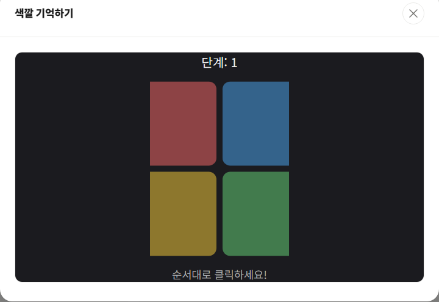

색깔 기억하기는 4개의 색 버튼이 순서대로 반짝이는 것을 보고, 그 순서를 그대로 따라 클릭하는 기억력 게임입니다. 이른바 "사이먼(Simon)" 게임 방식으로, 단계가 올라갈수록 기억해야 할 순서가 하나씩 늘어납니다.
기본 규칙
- 빨강·파랑·노랑·초록 4개의 버튼이 순서대로 한 번씩 반짝입니다.
- 반짝인 순서를 그대로 기억해서 같은 순서로 버튼을 클릭합니다.
- 성공하면 다음 단계로 넘어가며, 기존 순서에 무작위 색이 하나 더 추가됩니다.
- 순서를 하나라도 틀리면 게임이 종료되고, 도달한 단계가 기록됩니다.
오래 기억하는 팁
1. 색이 아니라 위치로 기억하세요
"빨강, 파랑" 같은 색 이름보다 "왼쪽 위, 오른쪽 아래"처럼 버튼의 위치로 순서를 외우면 클릭할 때 손이 더 빠르고 정확하게 움직입니다.
2. 서너 개씩 끊어서 묶어 외우세요
전체 순서를 한 번에 외우기보다 3~4개씩 묶어서 기억하면 단계가 길어져도 헷갈릴 확률이 줄어듭니다.